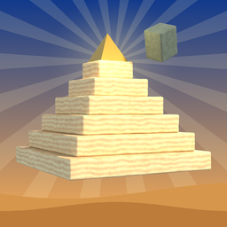

Pyramid Builder
Destek · Support
Soru, öneri ya da bir sorun bildirmek için bana e-posta gönderebilirsin. Genellikle 2 iş günü içinde yanıt veririm.
E-posta: neset.salik@gmail.com
For questions, feedback or bug reports, please email the address above. I usually reply within 2 business days.
Sık sorulan sorular
Oyun nasıl oynanır?
Alttaki işçi taşı başının üstünde taşıyarak kendi katında sağa sola koşar. Üst kattaki işçinin tam altına geldiğinde ekrana dokun; taş yukarı fırlar ve üstteki işçi yakalar. Yakalayan işçi yeni koşucu olur ve taş kat kat zirveye taşınır. Zirveye ulaşınca altın tepe taşı konur ve daha yüksek bir piramide geçersin.
Perfect, Good ve Miss ne demek?
Koşucu üstteki işçiyle tam hizadayken dokunursan Perfect, biraz kaymışken dokunursan Good alırsın. Çok uzaktayken dokunursan taş düşer (Miss) ve bir can kaybedersin. Üç taş düşerse oyun biter. Oyunun başında kattaki parlak ışık sütunu doğru zamanı gösterir; sütun altın rengine döndüğünde dokunmak Perfect demektir.
Kombo nasıl çalışır?
Arka arkaya yapılan her Perfect çarpanı artırır (x2, x3 … x5) ve taş altın renkte parlar. Her 10 Perfect'te ayrıca kombo bonusu kazanırsın. Good ya da Miss komboyu sıfırlar.
Altın nasıl kazanılır, ne işe yarar?
Her yakalama, her Perfect ve her tamamlanan piramit altın kazandırır. Ayrıca günlük ödül ve günlük görevlerden de altın gelir. Altınla Çarşı'dan (Bazaar) yeni taş görünümleri ve fırlatma izi efektleri alabilirsin. Bunlar yalnızca görseldir, oyunu kolaylaştırmaz.
Günlük ödül ve görevler ne zaman yenilenir?
Her gün (cihazının saatine göre) yeni bir günlük ödül ve 3 yeni görev gelir. Günlük ödülü arka arkaya alırsan ödül büyür; 7. günde ayrıca bir hediye kazanırsın. Bir gün atlarsan seri baştan başlar.
Reklamlar ne zaman çıkar?
Oyun sırasında asla. Oyun bittiğinde isteğe bağlı bir reklam izleyerek kaldığın yerden devam edebilir ya da altınını 2 katına çıkarabilirsin. Bazı oyun sonlarında, sınırlı sıklıkta kısa bir geçiş reklamı gösterilebilir.
İlerlemem kayboldu mu?
İlerlemen cihazında otomatik kaydedilir. Uygulamayı silersen kayıt da silinir.
Sesi, müziği ya da titreşimi nasıl kapatırım?
Ana menünün sağ üstündeki hoparlör ve titreşim düğmelerinden ya da oyun sırasında duraklat menüsünden.
Reklam izinlerimi nasıl değiştiririm?
Avrupa'daysan ana menüdeki "Privacy" penceresinde bulunan "Privacy Options" düğmesinden. iPhone'da Ayarlar → Gizlilik ve Güvenlik → İzleme bölümünden; Android'de reklam kimliğini telefonunun Ayarlar → Gizlilik → Reklamlar bölümünden sıfırlayabilirsin.